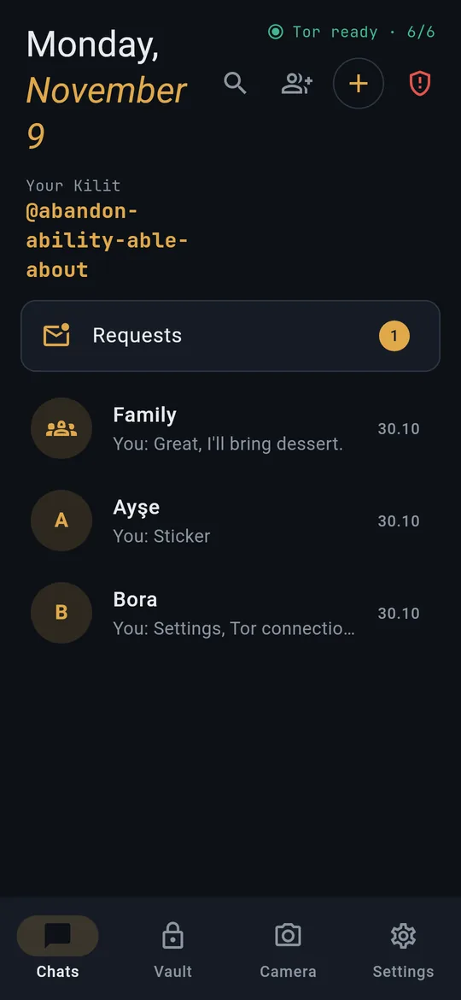

Post-quantum Signal protocol
Messages use libsignal: PQXDH with Kyber1024 for the first contact, then the post-quantum ratchet (SPQR).
README · THREAT_MODELKilit is a messenger and encrypted vault with no account, no phone number and no server of its own. Messages are encrypted on your device and leave it only through Tor.

YOUR PRIVACY. YOUR CONTROL.
Messages use libsignal: PQXDH with Kyber1024 for the first contact, then the post-quantum ratchet (SPQR).
README · THREAT_MODELNo sign-up, phone number or email. No analytics, no crash reports, no ads. Your ID is four words.
PRIVACY.mdAn embedded Tor carries every message to public Nostr relays. Kilit runs no server of its own.
README · RELAYS.mdGPL-3.0-or-later, built inside pinned Docker images. Read it, build it, report what you find.
LICENSE · repro/Everything below is in the current alpha for Android and Windows.
Four words, like @abandon-ability-able-about. Share it as a QR code or a kilit://add link. You can renew it; your contacts stay.
People who write first land in Requests and must pay a small proof of work. They get no read receipt until you accept.
Files up to 5 MB, each with its own key. Photos lose their metadata before sending; camera photos never touch the disk.
Each message is encrypted separately for every member, so on the relays a group message looks like any other.
Set per chat. Delivery ticks show when a relay holds a message and when their phone opened it.
Kilit runs on Windows with its own Tor. Link up to 5 devices to one ID; each has its own keys.
Notes to self and files in the .klt format (age with post-quantum X-Wing keys). Seal a message as KLT1: text and send it through any other app.
The PIN is bound to the phone's hardware key. A separate 4-digit panic code wipes everything.
Built-in obfs4 and Snowflake bridges, or your own bridge lines; Kilit offers them when Tor seems blocked. 15 languages.
The message is sealed before it leaves your device and opened only on theirs. In between it is ciphertext on a relay.
Scan their QR code or open their kilit:// link. The first message sets up keys with PQXDH and Kyber1024.
Signal's post-quantum ratchet encrypts the message, then NIP-44/59 wraps it again for the relay.
The embedded Tor delivers it to public Nostr relays, under a mailbox tag that changes every day.
Their Kilit picks it up over Tor and decrypts it. Two ticks: their phone opened it.
what the relay sees mailbox 9f3c…e21a changes every 24 h time 2026-11-09T21:04Z size class M content ciphertext (Signal SPQR → NIP-44/59) ip a Tor exit, never yours
From the project's threat model. It is a draft and will be updated as Kilit grows.
Alpha. Not audited. Kilit has had no independent security review. Do not rely on it where your life or freedom depends on it.
| First contact | PQXDH · Kyber1024 |
|---|---|
| Ongoing messages | Signal post-quantum ratchet (SPQR) |
| Relay wrapping | Nostr NIP-44 / NIP-59 |
| Vault and carrier | .klt · age + X-Wing (KLT1) |
| PIN | HW key MAC → Argon2id |
| Network | Embedded Tor · obfs4 · Snowflake |
The people and messages are made up. Kilit blocks screenshots by default, so these are drawn from the real screens by app/tool/screenshots.
Every build is on GitHub Releases. Before installing, compare the SHA-256 and, on Android, the signing certificate.
Two permissions: the network, used only by the embedded Tor, and the camera, for photos you take in a chat.
Download APK Kilit-0.1.10-alpha.apk · 151 MBInstalls for your user only, no administrator rights. Not code-signed yet, so SmartScreen warns: check the SHA-256, then More info, Run anyway.
Installer (.exe) windows-setup.exe · 36 MBVoice messages, kept in memory only; a computer can leave your Kilit ID; the camera works on Windows.
All releases# 1. checksum must match the release notes $ sha256sum Kilit-0.1.10-alpha.apk 638007f07d87ac10a215dc9c847aef86b12e7b66acf90d073183502057f39b39 # 2. the signing certificate must be Kilit's $ apksigner verify --print-certs Kilit-0.1.10-alpha.apk SHA-256: DE:B8:42:2C:53:F6:FB:C3:34:7C:5C:0B:84:31:61:17: D2:C9:4A:53:CD:70:FA:6A:B4:E9:50:16:DA:9D:B1:E1 # windows (PowerShell) > Get-FileHash Kilit-0.1.10-alpha-windows-setup.exe a55c0496acfef9b35a1a2386192b2fd00e122a61c7a705246240078a8fd0a3a6
No. You get a Kilit ID of four words and share it as a QR code or link. No phone number, email or contact upload.
Mailbox addresses, message times and a size class. Not the content, and not your IP address, because Kilit connects through Tor.
Kilit can use bridges: built-in obfs4 or Snowflake, or bridge lines you add yourself. Automatic mode tries direct, then obfs4, then Snowflake.
The vault is bound to that phone's hardware key and cannot be opened elsewhere. Encrypted backup is planned for a later stage.
The installer is not code-signed yet. Check its SHA-256 against the release notes, then choose More info and Run anyway. The portable zip is the same app.
No. Kilit is alpha and has had no independent security review. Do not rely on it where your life or freedom depends on it.
Read the code.
Then trust it.
GPL-3.0-or-later. Derived in part from Kryfo (GPL-3.0-or-later) and linked with libsignal (AGPL-3.0), so the combined program carries the AGPL-3.0 network-interaction terms. Kilit is not Kryfo and is not endorsed by its authors.